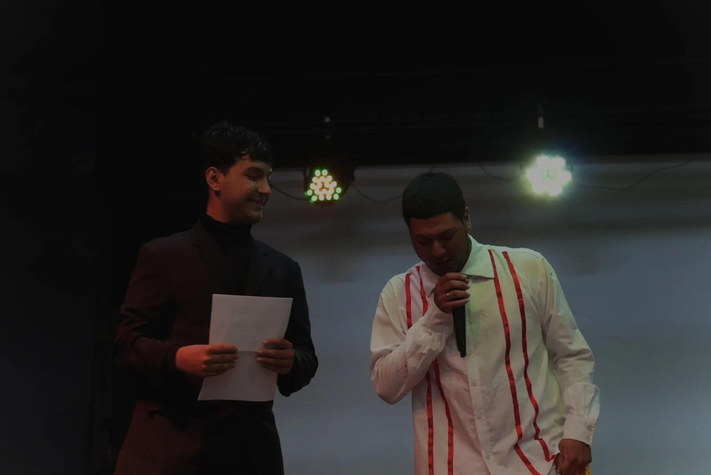
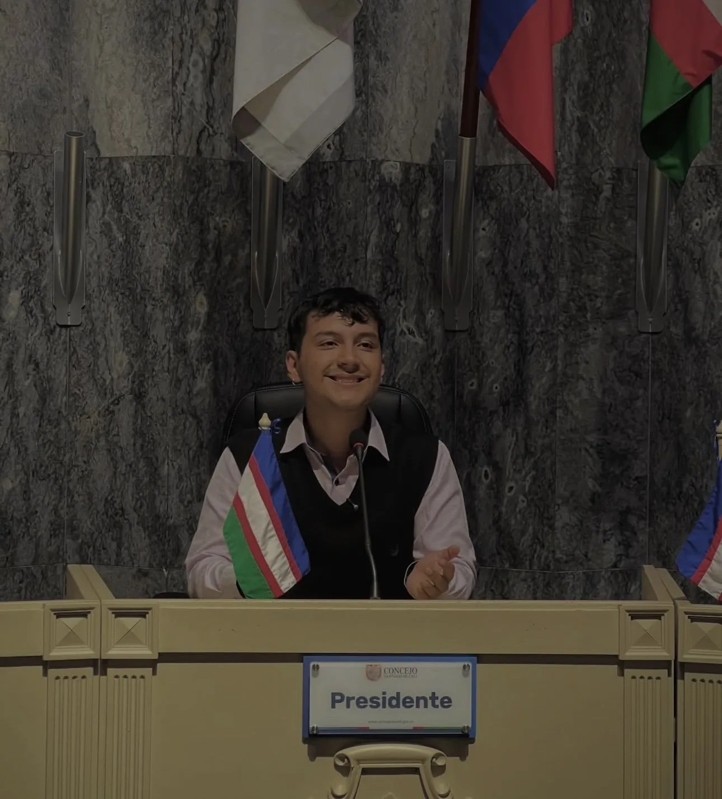
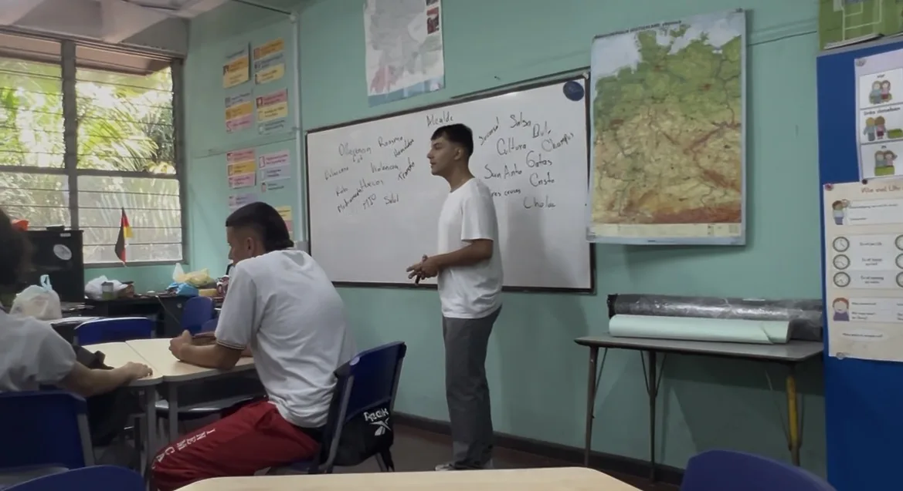
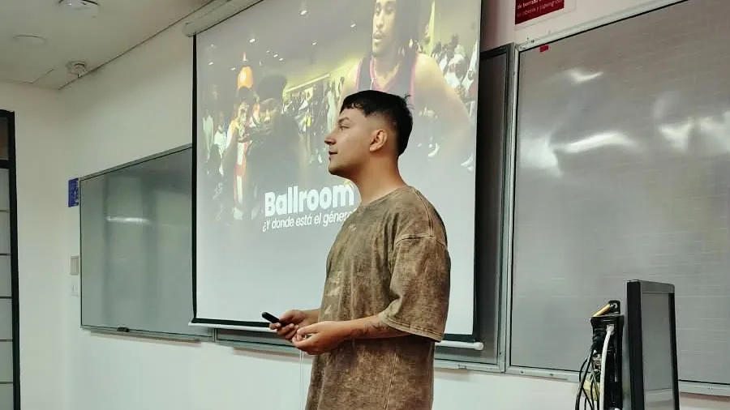
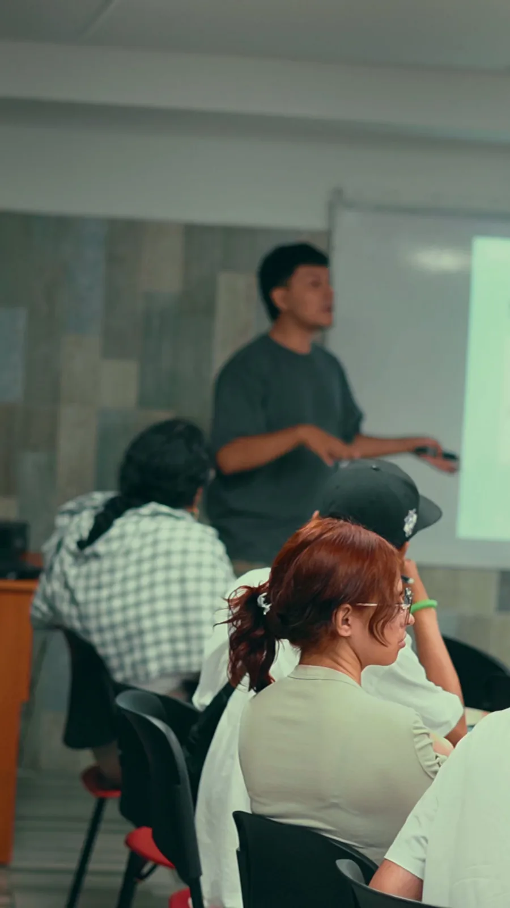
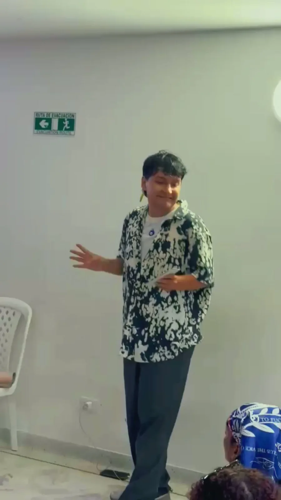
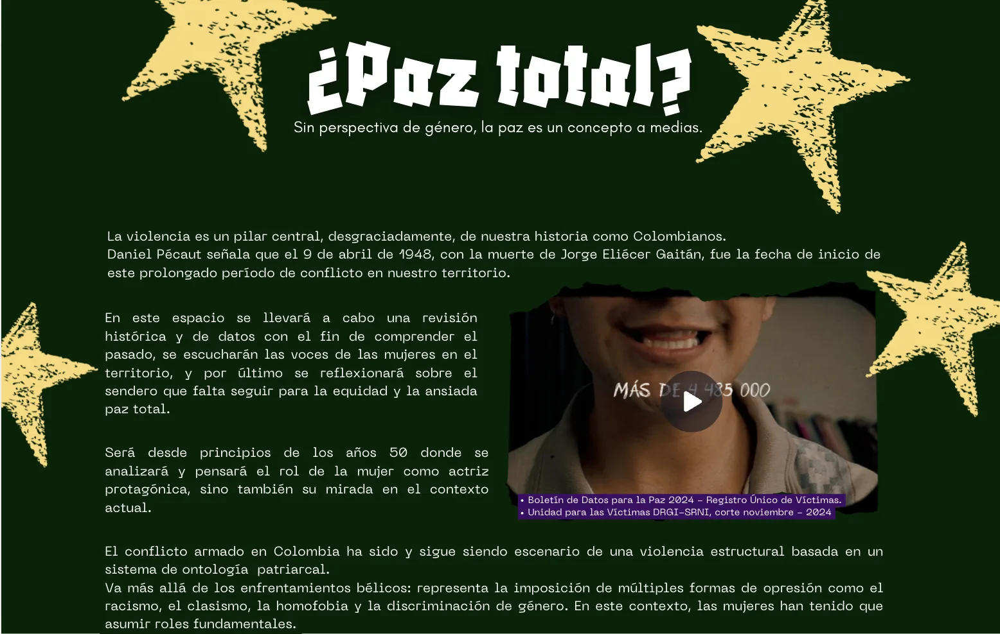

Eventos, talleres, investigación y periodismo
Eventos


Eventos
He dictado talleres a juventudes sobre violencias, liderazgo, sistema político juvenil y divulgación científica en género.




Investigación
Proyecto de investigación sobre la paz territorial en la periferia de la ciudad. Datos y testimonios sobre las vivencias de la población del territorio durante la época de violencia en Colombia.
Periodismo
Creación de proyectos periodísticos sustentados en la investigación, con enfoque en derechos humanos, población históricamente vulnerable y divulgación de problemáticas sociales.
